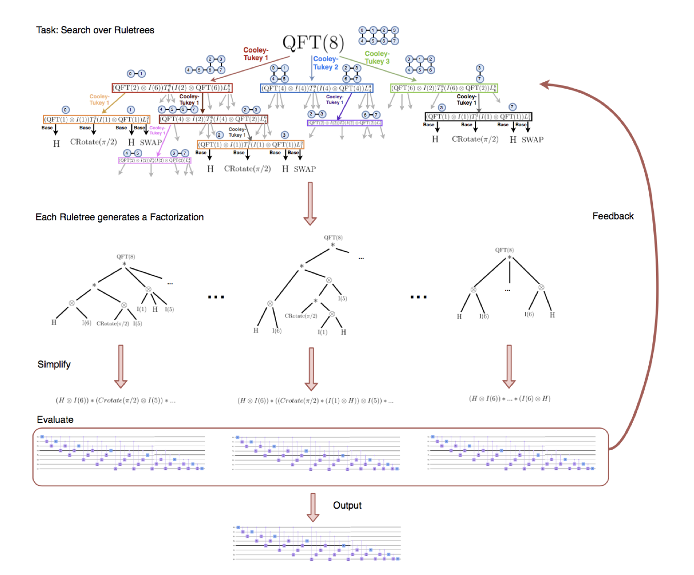

Project Description

SPIRAL Quantum Compiler
As part of my master's thesis, I worked on the SPIRAL compiler system (https://www.spiral.net)
The compiler takes in a DSL representation of an algorithm (like a DFT),
and performs an optimizing search over possible decompositions of the algorithm into smaller chunks.
Certain atomic operations may be more efficient on certain hardware, so the target hardware is directly taken into account,
when deciding on decomposition heuristics.
Simplest example is applying cooley-tukey to break up an FFT into smaller matrix operations,
the sizes of which perform well on a given cache structure.
I am not a quantum physicist,
but the key observation is that quantum computers are essentially linear algebra machines.
There is a lot of domain-specific terminology,
that hides the fact that it is simply implementing a linear transform, with measurement being
a projection onto a set of basis vectors.
This work was published at IEEE HPEC 2021.
Where I gave a talk on it.
and the paper won an Outstanding student paper award.
- Preprint : https://spiral.ece.cmu.edu/pub-spiral/abstract.jsp?id=345
- Published : https://ieeexplore.ieee.org/abstract/document/9622814
This work was also published at the SC20 supercomputing conference,
where it won Best research poster.
- http://spiral.net/doc/pdf/sc2020_poster.pdf
This work was also my thesis.
- http://reports-archive.adm.cs.cmu.edu/anon/2021/abstracts/21-114.html